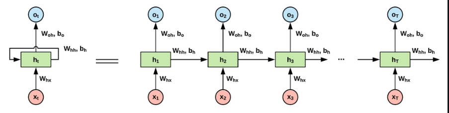

最近在LSTM这一块有点扯不清，现在回想一下发现自己将两种LSTM记混了。
LSTM(input与label无关)
第一种是这样的：

t时刻的input x与t-1时刻的label y没有关系，完成的是一个序列到另一个序列的转换。
Neural Language Models通过input和output的错位，用一行LSTM完成操作。
PyTorch中，直接
LSTM（input与label有关）
LSTM被广泛地用于构造Encoder-Decoder模型。Encoder部分没什么问题，但是Decoder部分与上面提到的结构不同，因为Decoder的过程是一步步解码的过程，是将t-1时刻应有的输出，传递给t时刻的cell。这意味着在编码的时候不能一步到位。
TensorFlow的解决方案是包装了一个decoder。
在训练的时候，PyTorch的官方文档框架（https://pytorch.org/tutorials/intermediate/seq2seq_translation_tutorial.html）是这样的：
1 | if use_teacher_forcing: |
可以看到Decoder是通过for循环进行逐步解码的。这和上面那类LSTM模型的运作规律不一致。